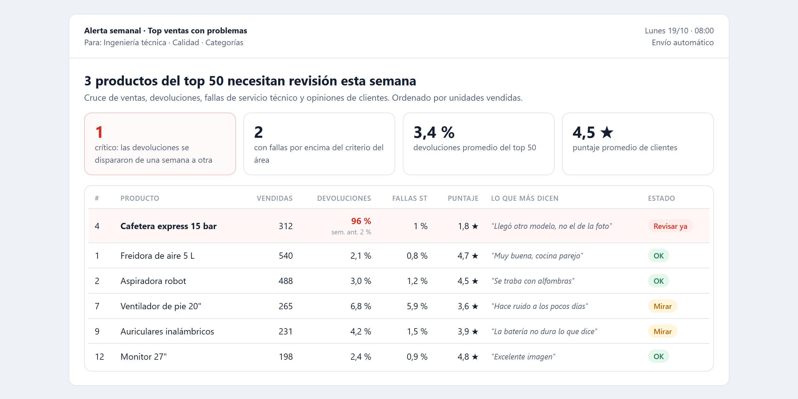
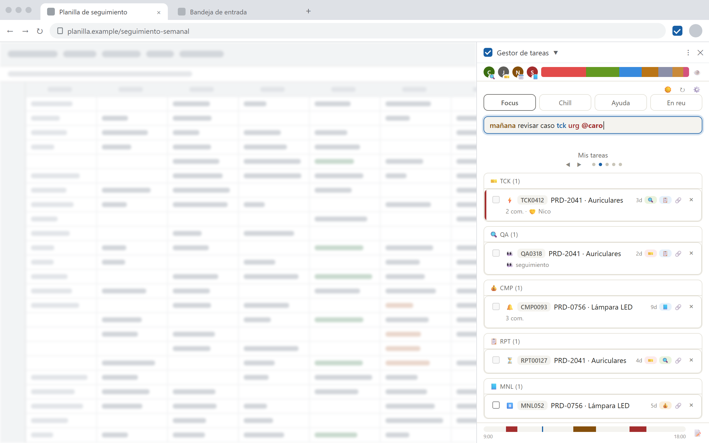

The technical foundation
I trained as an IT Technician in high school. Software has always been my interest and my hobby: I taught myself to build systems.
I'm Milena Perez Benzo. I bring together sources that don't talk to each other, find what matters, and present it so people can make decisions.
My story
There's a common thread in my work: turning scattered information into clear knowledge so other people can make decisions.
I trained as an IT Technician in high school. Software has always been my interest and my hobby: I taught myself to build systems.
At my family's auto repair shop, I moved the bookkeeping from handwritten notebooks to a linked database, with a bot and a mobile web app.
From July to November 2026 I worked as an analyst at an e-commerce company, where I built 6 reports, dashboards and tools used by other teams.
I study Social Communication at the University of Buenos Aires (UBA), on the research track. That's where I learned something that guides my work: a large volume of data says nothing without the judgment to question it and someone to tell it well.
Projects
Pick a project to see the details: the question, the data, the finding and the decision it enabled.
100% returnsdetected from one week to the next, with the root cause found and fixed

10 → 3 minper lookup, with 7 sources integrated

A finding, step by step
This is how the Monday alert works. It's a recreation of the real case with made-up data.
| Product | Units sold | Returns | Rating | Status |
|---|---|---|---|---|
| Air fryer | 540 | 2 % | 4.7 ★ | OK |
| Robot vacuum | 488 | 3 % | 4.5 ★ | OK |
| Premium product | 312 | 96 % | 1.8 ★ | Check now |
| Standing fan | 265 | 7 % | 3.6 ★ | Watch |
| Headphones | 231 | 4 % | 3.9 ★ | OK |
Today the alert is used to review products proactively.
How I work with data
What I'm like to work with
Two years teaching technology to adults over 50 taught me that everyone connects with a message differently. I adapt language and format to whoever receives it.
I spot the steps that cause delays or unnecessary effort and automate or remove them, cutting operational time and the team's cognitive load.
I validate every deliverable. I use AI as a tool to boost my work; the judgment, the validation and the responsibility for the result are mine.
I build my tools together with the people who use them and refine them with their feedback. I'm always learning: right now I'm taking Power BI with Microsoft and professional English.
Contact
Social Communication (UBA, research track) · Google AI Fundamentals · currently taking Power BI with Microsoft and professional English.
Message me on LinkedIn